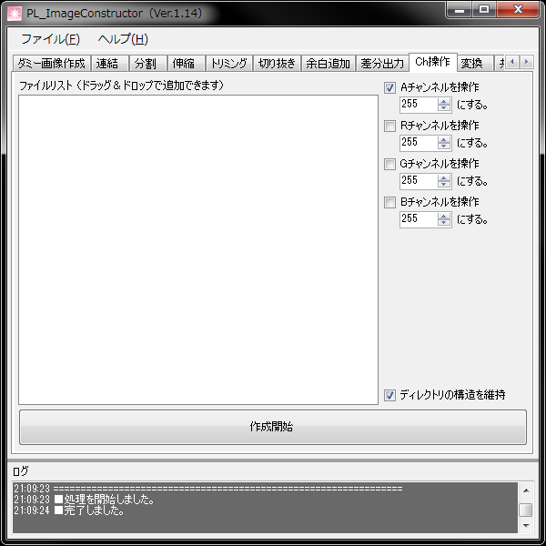

画像のARGBチャンネルの値を書き換えます。
なお、アルファ操作も単純な値の書き換えになります。
例えば、7F000000（半透明の黒）は一般的な画像加工ソフトでアルファ削除すると、白マットに乗せた上で不透明にする処理を行うケースが多く一般的にはFF7F7F7F（灰色）になりますが、このツールではマットという概念はなくそのピクセルが所持している純粋なデータになります。
その為、完全に透明なピクセルの場合でもその画像が潜在的に持っている色（白以外の色や何かしらの模様）が浮かび上がります。
- ディレクトリの構造を維持
登録されたファイルのフォルダ構成再現して出力します。